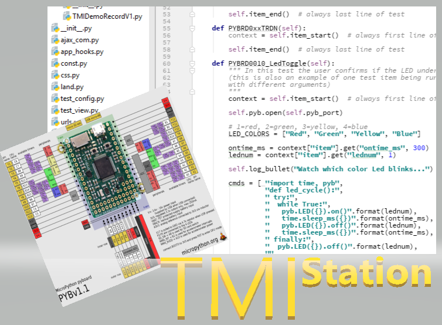

Welcome to TMI’s documentation!¶
The TMI platform is a manufacturing test system that provides a framework for creating test programs to test your product, and a backend dashboard to monitor production. The platform is intended to allow you to focus on testing your product, rather than the infrastructure to manage the data, scripts, users, roles, reporting and other mundane stuff.
